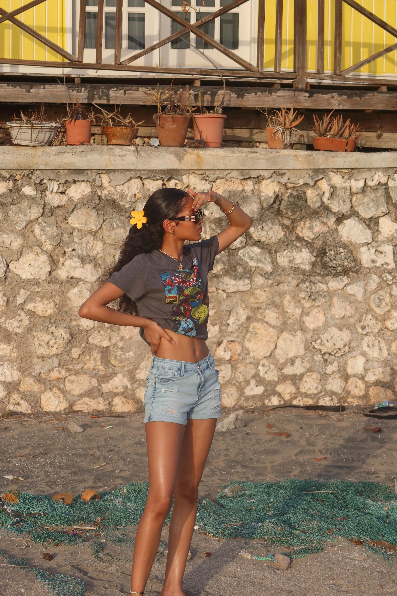
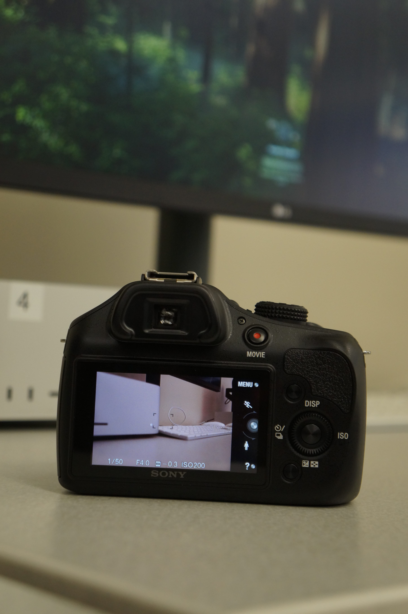
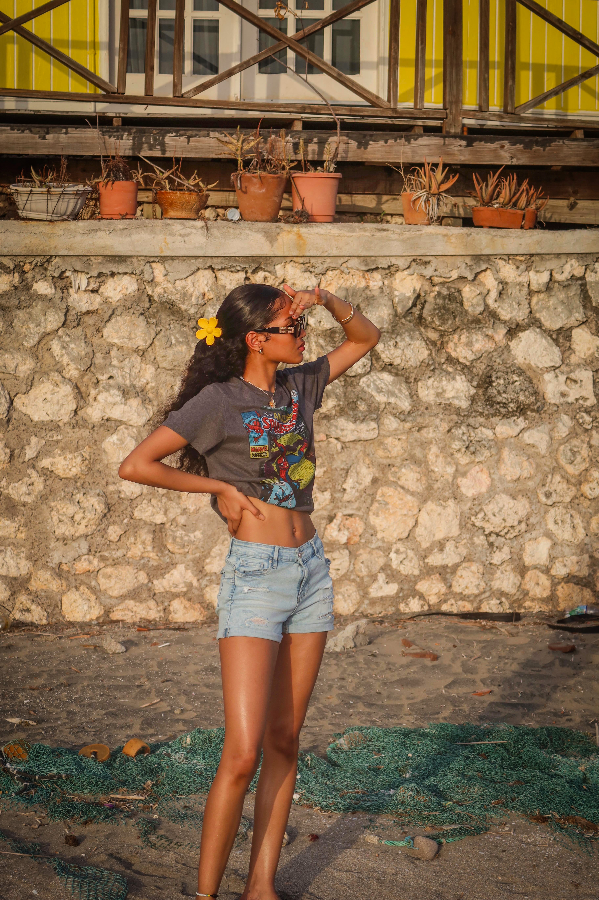

Before and After – Camera Raw
  
Here I adjusted exposure, corrected clipping warnings, and used the straighten tool to level the image using Camera Raw.
Here I adjusted exposure, corrected clipping warnings, and used the straighten tool to level the image using Camera Raw.